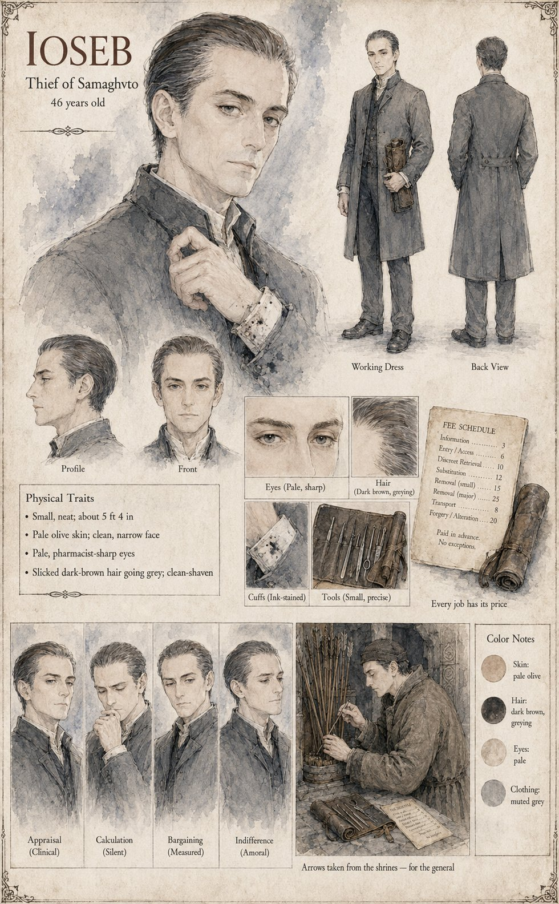

Ioseb
Thief of Samaghvto, living above a glovemaker’s shop behind the Wine Gate · twenty years in the trade · 46 on his sheet
Called the Quiver-thief by nobody, because nobody knew he existed, he lives above a glovemaker’s shop in the lane behind the Wine Gate: a small, neat man with ink on his cuffs and the eyes of a pharmacist. He has made a comfortable living for twenty years from the principle that things other people believe in are things other people will not guard properly. He has taken a Reader’s seal, a drowned merchant’s ring from the drowned merchant’s finger, and the Hierarch of Solan’s tuning-fork, on one fee schedule, a fifth of the object’s price plus expenses. When Guaram brings him the king’s request he is not offended, only practical: a thing that belongs to the weather has no insurer. It will be double.
In the month of Lorren a small man in a goatherd’s coat knocks at the mill-shrine at Mesvana at dusk and asks the old woman who keeps it for bread, in the voice of one who has done this on other days to other households. He is the Mother’s guest until the next first frost under the Hearth Law, the same law that left a bow on a shelf in Ormeli; the manuscript does not remark on the echo. In the morning the glass case is empty. The job has cost him forty minutes of sleep, a surcharge he had not priced in, and it is the first time in his career that a theft has been harder on the thief than the victim. The Mother’s arrow he takes is the one that fogs the pass at Dzaleti.
The Epilogue records that when the Four Crowns break into thirteen lordships and the ten spent shafts are there for the buying, three cases hold only plain ash cut at a stall at the Wine Gate, delivered by a small neat man with ink on his cuffs at a fifth of the price plus expenses. The manuscript’s revision notes call them Ioseb’s shafts.
The manuscript gives his looks in one line, his trade, his twenty years, his fee and the goatherd’s coat. The sheet’s age of 46, small build of about 5 ft 4 in, pale olive skin, clean-shaven narrow face, pale eyes, slicked dark-brown hair going grey, long grey coat and waistcoat, ink-stained cuffs and roll of small precise tools are its own, as are its panels Appraisal (Clinical), Calculation (Silent), Bargaining (Measured) and Indifference (Amoral). It also prints a fee schedule of flat prices headed Paid in advance. No exceptions., which is its own and not the manuscript’s fifth-plus-expenses. Its scene, captioned Arrows taken from the shrines — for the general, has him at a bench sorting shafts; the manuscript has him take one arrow, from Mesvana.
“things other people believe in are things other people will not guard properly”